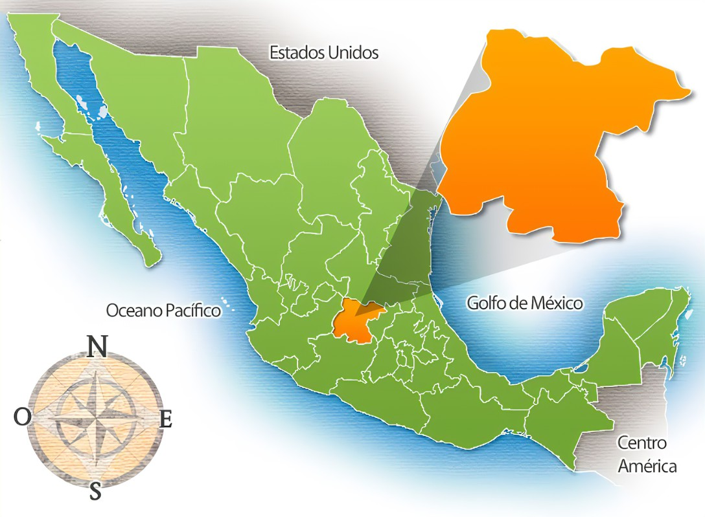

Que es Guanajuato
Guanajuato es un estado del centro de México, regado por el Lerma y sus afluentes. La capital del estado es la ciudad homónima, que es un centro turístico con notables monumentos. El nombre de Guanajuato surgió con los nativos purépechas que habitaron en la zona, quienes nombraron el territorio que ocupaban como “Quanaxhuato”, cuyo significado se traduce como “Lugar montuoso de ranas” o “Lugar de muchos cerros”, haciendo referencia a la forma de los cerros que había en la región.
El estado de Guanajuato se ubica geográficamente en una zona estratégica, en la que históricamente han confluido las distintas vías de comunicación que han enlazado el intercambio comercial de las tres principales áreas metropolitanas del país (Ciudad de México, Guadalajara y Monterrey); por lo que se convirtió en zona de paso, abastecimiento y provisión del comercio interno. No obstante, tradicionalmente su peso estuvo fundamentado en el sector económico primario; siendo la minería durante la época colonial, y la agricultura durante los siglos XIX y XX, las más sobresalientes. Sin embargo, desde mediados de la década de 1990, inició un proceso de industrialización y expansión del sector servicios, especialmente el turismo, que diversificó su economía y aceleró su crecimiento. Esto ha transformado a la entidad en una de las de mayor incidencia en el crecimiento económico nacional.
Se trataba de una población dedicada a la economía agrícola, que combinaba la recolección de frutos y raíces con la caza y la pesca. Uno de los signos distintivos de dicha cultura fueron sus entierros; A veces los restos humanos estaban asociados a tlacuitles (fogones) o delimitados por piedras redondas. Los cuerpos recostados de espalda recibían ofrendas, pero carecían de ellas si estaban acostados sobre el vientre; dichas formas son interpretadas como la pertenencia o no a un grupo social destacado; al tiempo que los cuerpos eran sepultados con sus perros.
Los vestigios más antiguos de presencia humana, en el territorio que comprende el actual estado, corresponden a una hoja de pedernal de forma lanceolada, localizada en la Cañada de Marfil, y con una antigüedad de 9500 años aproximadamente (año 7500 A.C.). La llegada de los primeros habitantes se produjo por migraciones de pueblos nómadas y recolectores provenientes de las costas del golfo y el pacífico, guiados hacia las planicies del altiplano por la condiciones climáticas favorables posteriores al fin del último periodo glacial.